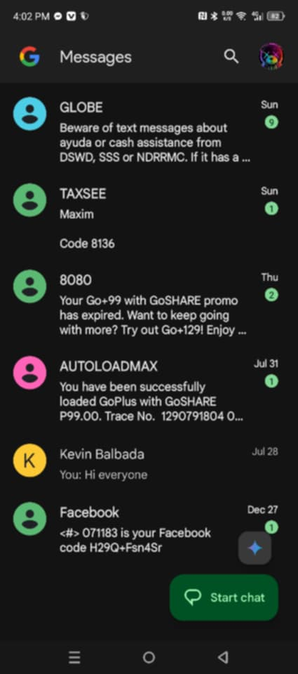
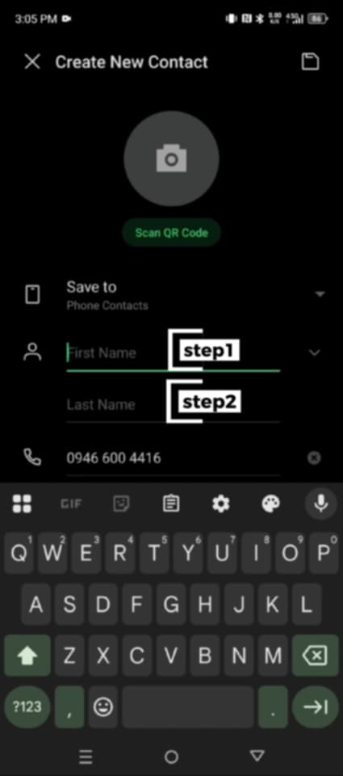
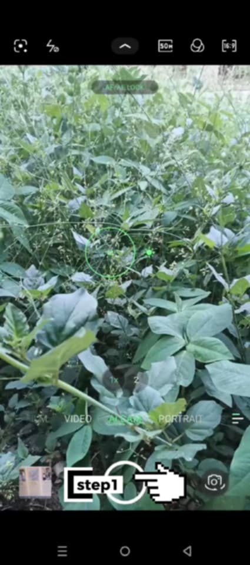

What is Android?
Android is an open-source, Linux-based mobile operating system developed by Google. It powers billions of devices worldwide, including smartphones, tablets, wearables, and smart TVs. Android offers extensive customization options, allowing users to tailor their experiences. It began its journey in 2003, created by Andy Rubin and his team as a software platform for digital cameras.
Anu ba itun Android?
An Android in usa nga open-source nga mobile operating system nga nakabase ha Linux nga gin-develop
han Google. Ginagamit ini ha bilyon-bilyon nga mga device ha bug-os nga kalibutan, upod na an mga
smartphone, tablet, wearable, ngan smart TV. An Android nagtutugot hin haluag nga pagpahiangay
(customization), nga nagpapahimo ha mga user nga ig-angay an ira eksperyensya. Nagtikang ini han iya
biyahe han 2003, nga ginbuhat ni Andy Rubin ngan han iya grupo komo usa nga software platform para
ha mga digital camera.
Different Applications
Message inbox where we can see the messages we want to send and receive.
Ini an inbox han mga mensahe kun diin makikita naton an mga mensahe nga karuyag naton ipadara ngan batonon.


How to add a contact in Android phone?
1. Write the first name
2. Write the last name
Paonan-o pagdugang hin contact ha Android nga telepono?
1. Isurat an primero nga ngaran
2. Isurat an aping nga ngaran

This is the camera section on the Android phone.
1. Taking a photo on an Android phone.
Ini an parte han kamera ha Android nga telepono.
1. Pagkuha hin litrato ha Android nga telepono